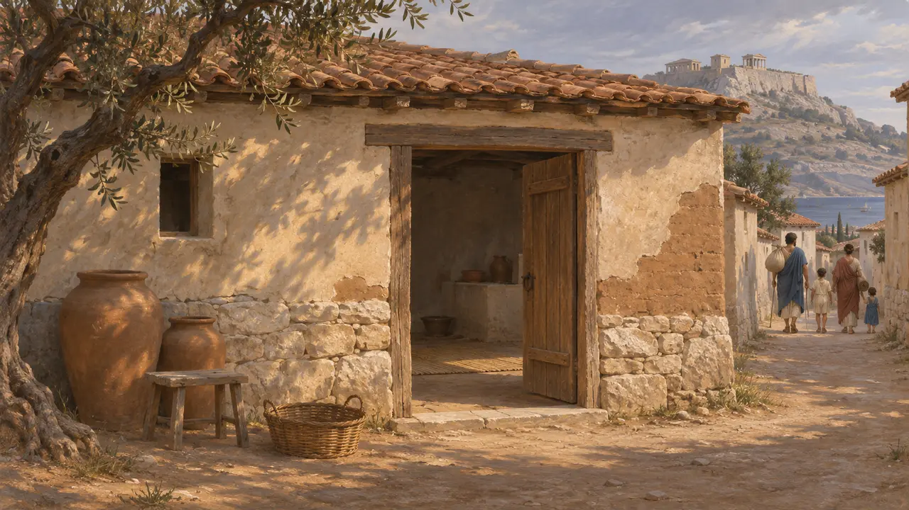
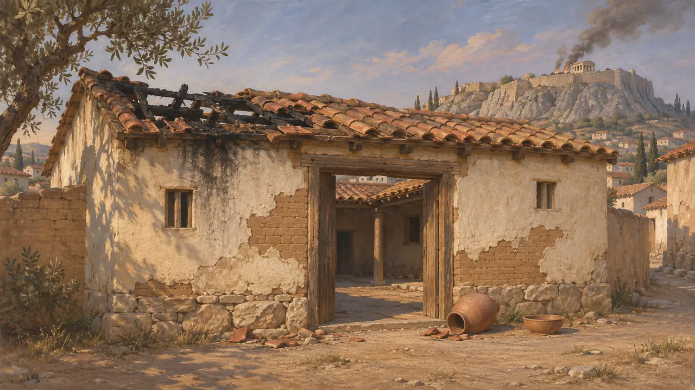
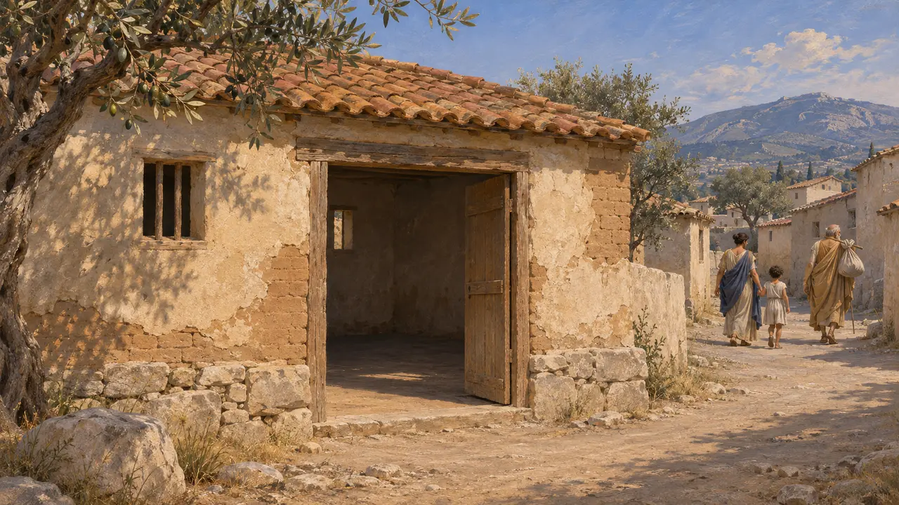
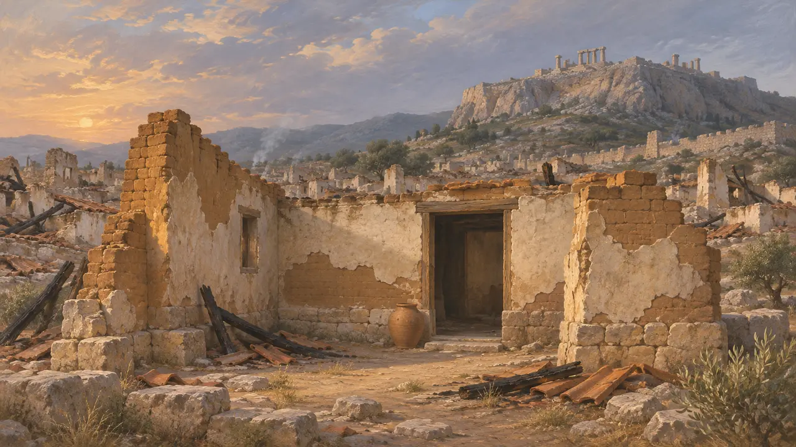
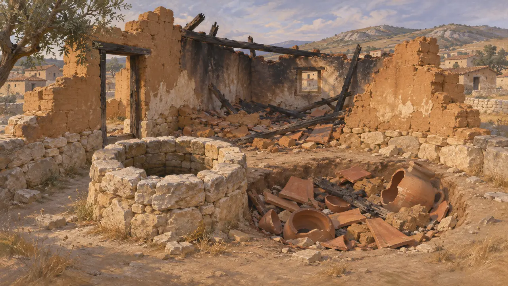

空屋
雅典下城的一座废弃房屋，公元前480年至公元前479年
公元前480年，薛西斯的大军在温泉关之后挥师南下，雅典人弃城而去，携家眷渡海前往特洛曾、埃吉纳和萨拉米斯。波斯人到来时，下城的房屋已人去屋空；公元前479年马多尼乌斯再度焚烧雅典时，其中大多数被毁。这次撤离保全了雅典的民众与舰队，使其得以投入萨拉米斯之战。
游戏中： 空屋作为历史建筑矗立在关卡地图上，玩家无法建造。其说明依据希罗多德8.41，追忆那些被送往萨拉米斯、特洛伊曾和埃吉那的家庭。

公元前480年弃城
古代记述希罗多德记载，阿尔忒弥西昂之战后，雅典舰队停泊于萨拉米斯。随后一道公告要求每户人家尽力保全自家的子女和仆人。大多数家庭前往特洛曾，一些去了埃吉那，还有一些去了萨拉米斯。他还补充说，女祭司报告称卫城的圣蛇未曾动过供奉给它的蜜饼，雅典人将此视为雅典娜也已离开城市的征兆。
Herodotus 8.40-41

薛西斯所见之城
古代记述据希罗多德记载，薛西斯的大军开进了一座空城雅典。城中只剩少数神庙司库和贫苦市民，他们凭一道木栅墙据守卫城。波斯人从阿格劳洛斯圣祠附近的陡壁攀上，杀死守军，焚毁了圣所。山下的空屋很可能也在此时遭到劫掠，部分被焚。
Herodotus 8.51-53

地米斯托克利法令
争夺中1959年在特罗曾发现的一方铭文，自称记录了雅典人根据地米斯托克利的提议所作的决议：将妇女和儿童送往特罗曾，将老人和可携带的财物送往萨拉米斯。这块石碑刻于公元前3世纪，约晚于事件两百年。史家至今仍在争论，它保存的究竟是一道真实的法令，还是后世的爱国版本。铭文还把这一决定置于舰队启航前往阿尔忒弥西昂之前，而希罗多德则将撤离记在那场战役之后。
R. Meiggs and D. Lewis, A Selection of Greek Historical Inscriptions, 1969, no. 23

第二次劫掠与废墟
古代记述公元前479年，马多尼乌斯再度占领雅典，据希罗多德记载，他发现这座城市又一次空无一人。在撤往波奥提亚之前，他焚毁了城市，推倒了一切尚存的城墙、房屋和神庙。修昔底德说，雅典人返乡时，环城墙仅剩下零星几段。大多数房屋已经倒塌，只有少数波斯贵族曾经下榻的宅子幸存。
Herodotus 9.3, 9.13; Thucydides 1.89

地下的残骸
见于史载雅典广场的发掘发现了一些填满碎陶片、屋瓦和瓦砾的水井与坑穴，小T. L. 希尔将其与波斯人两度劫掠后的清理工作联系起来。当时的房屋大多可能是石基上的泥砖建筑，屋顶一旦焚毁便极易坍塌。这些堆积层被广泛用于陶器断代，不过也有学者质疑它们是否全都属于公元前480至前479年。
T. L. Shear Jr., The Persian destruction of Athens, Hesperia 62, 1993
来源
- Herodotus 8.40-41
- Herodotus 8.51-53
- Herodotus 9.3, 9.13
- Thucydides 1.89
- R. Meiggs and D. Lewis, A Selection of Greek Historical Inscriptions, 1969, no. 23
- T. L. Shear Jr., The Persian destruction of Athens, Hesperia 62, 1993